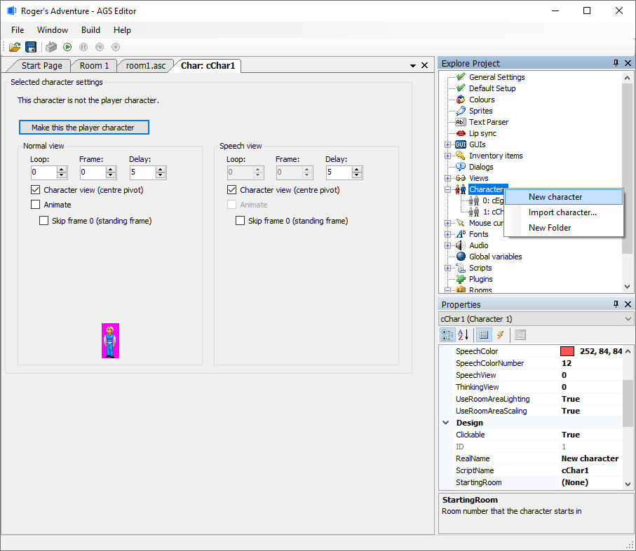
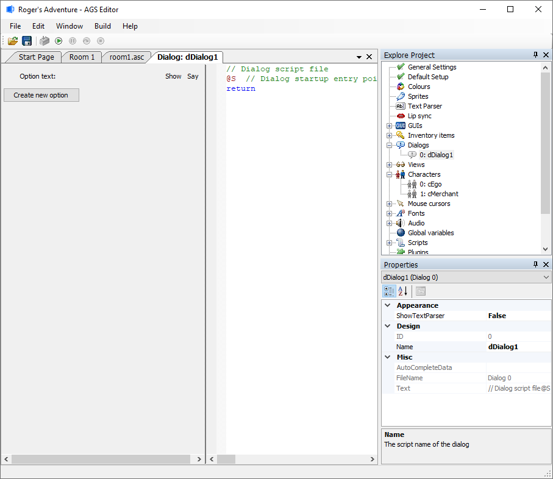
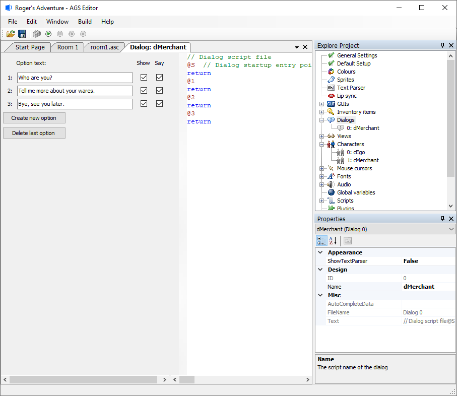
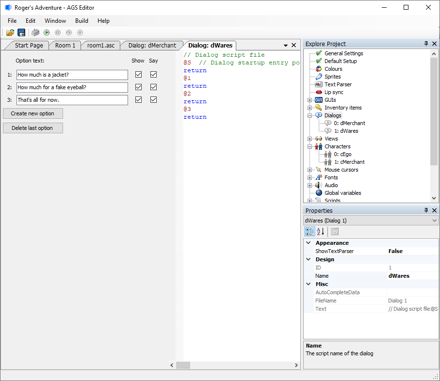

Getting Started with AGS - Part 8
Conversations
What fun would an adventure be if there were no other characters to talk to? Probably not much!
How much you go into dialog depends of course on your game style. Generally, Sierra games used to just have one fixed line of dialog which the characters would talk about, possibly changing if you talked to the same person again.
LucasArts games (and some Sierra titles such as Quest for Glory) on the other hand, had complete dialog trees through which you could choose your topics to talk about.
AGS lets you do it whichever way you want. We'll start off by looking at the complete dialog tree approach, and then see how easy it is to cut it down to get a Sierra-style system.
Now, before we go any further, let's consider for a moment what conversation structure we want. It's going to be a lot easier to implement if we have this planned in advance. For this tutorial, we'll go for a structure like this:
| Greetings! |
|
---- | Who are you? | / ---- | How much is a jacket? |
| /
---- | Tell me more about your wares. | ----< -------| How much for a fake eyeball? |
| \
---- | Bye, see you later. | \ ---- | That's all for now. |
In other words, when we first speak to the other character, we will say "Greetings!". After he replies, we will then be presented with three options to choose from.
The "Tell me more about your wares" option will then lead us to be able to ask a different set of questions.
Additional Characters
Before we begin, we need to create a second character - we can't just have Roger talking to himself! Go to the "Characters" node in the Project Tree, right-click it and choose "New Character". The new "cChar1" character and their properties window will automatically open up.

In the Properties Grid:
- Design -> RealName - Give this new character a Real Name. I'll call him "Merchant".
- Design -> ScriptName - Now - and this bit is vital - you also need to set this new character's Script Name. This is the name by which we refer to him when creating our dialogs. I'll just use "cMerchant" as the script name.
 (NOTE: I'd recommend you set it to something sensible like this, and don't just leave it as "cChar1" or else your dialog scripts will get very confusing!)
(NOTE: I'd recommend you set it to something sensible like this, and don't just leave it as "cChar1" or else your dialog scripts will get very confusing!)
Dialogs
OK, all done? Navigate to the "Dialogs" node in the Project Tree, and right-click on that node. Choose "New dialog" to make our first dialog. You'll see this rather empty window:

Conversations in AGS are made up of topics also referred to as a dialog -- the two words are one and the same thing. A topic consists of a set of options that the player can talk about - not all of which are necessarily available to the player at the start of the game. When the player selects an option from a topic, the topic's dialog script is run.
Each topic can contain some start-up text, which is displayed before the options are presented to the player. Our "Greetings" line qualifies for this, so we don't need to make a special topic for it.
Right, let's make our first dialog. Click the "Create new option" button three times, and three new rows will appear in the window. You'll also notice some new lines being added to the script on the right-hand side. Make sure that the "Show" checkbox is ticked for all the options -- this determines whether the options are initially available to the player or not.
Also, this dialog currently has no name, but we'll need to give it one so that we can access it later. The convention in AGS is for dialogs to start with "d", so I'm going to call this "dMerchant". Use the Properties Grid to set the name, as usual.
Now, type in some text from our dialog plan from above, into the three new text boxes:

While we're at it, let's create the next set of options too. Right-click the "Dialogs" node in the Project Tree, and select "New Dialog". A new blank dDialog1 is created and should be automatically opened for you. Create three new options and type them in. In the Properties Grid, change the Name from "dDialog1" to "dWares".

Now, go back to the first dialog "dMerchant" tab (select it in the Editor Tab bar), and let's have a look at the script. This is not the same type of script that we've used for our Events like picking up the key. It's a much simpler dialog-only scripting language.
Each of the "@" lines is an entry point. These define the different places where your script can start. The "@S" entry point happens when the topic is first started - and so this is where we want our "Greetings" text to be displayed.
Dialog scripting is very simple. It takes the form:
SCRIPTNAME: "Text to say"
So, in between the "@S" and the "@1" lines, insert a couple of new lines, and type the following:
EGO: "Greetings!"
MERCHANT: "Hello there!"
return
Remember, these are the script names of the characters (but without the initial "c"). The "return" is essential, because it tells AGS to stop running the script at that point and to display the options to the player.
The numbered entry points will be run when the player selects the appropriate option - for example, if the player clicks the "Who are you?" option, then entry point @1 will run.
Here is the finished script for this topic:
// Dialog script file
@S // Dialog startup entry point
EGO: Greetings!
MERCHANT: Hello there!
return
@1
MERCHANT: My name is Derek, and I'm a local merchant.
MERCHANT: I can sell you all sorts of things.
return
@2
MERCHANT: I specialize in selling various random items.
MERCHANT: My jackets and fake eyeballs are popular.
goto-dialog dWares
@3
MERCHANT: Do pop by again sometime.
stop
The goto-dialog command takes the player to another dialog - in this case, the new "dWares" dialog we just created (with questions about the merchant's wares).
The stop command tells AGS to end the conversation and return to the game (whereas return returns them to the list of options to talk about).
Now, we're not quite done ... we've got to setup our second dialog too! In the Editor Tab bar, click the "Dialog: dWares" tab to return to the second topic. Fill in the script however you like. Here you can use the goto-previous command to take the player back to the first list of options when they get bored of talking about his wares.
Here's my completed script for dWares:
// Dialog script file
@S // Dialog startup entry point
return
@1
MERCHANT: A fine leather jacket - for you, just $200!
EGO: That's a bit expensive, isn't it?
MERCHANT: Not for this, sir. It's hand-made by my wife.
EGO: Oh. But no, thank you.
return
@2
MERCHANT: A perfect joke item, the eyeball is just $3.99.
return
@3
MERCHANT: Very well.
goto-previous
As you can see, it's done very similarly to the first one. Notice the use of "return" in the startup entry point, to make sure that it doesn't go on and run the next bit of script straight away.
We're almost done! All we've got to do now is add a way for the player to initiate the conversation.
Open up the Character editor for the new cMerchant character. Change their "StartingRoom" property to room 1 (i.e. the same as the player character), and position him at, let's say, X:53, Y:144. You can always change this later.
Now, still with the Merchant character tab open, go to their Events list. Using your skills from earlier on in this tutorial, add a command to initiate the dialog when the player talks to the Merchant "Talk to Character". Now, we're all set!
function cMerchant_Talk()
{
dMerchant.Start();
}
Testing Your Work
Now, hit F5, talk to the Merchant, and try out the conversation.
More on conversations
You may have noticed the "Show" and "Say" check-boxes in the dialog editors.
Say Dialog
You may have noticed that when the player selects an option in-game, the player character will say the option text. However, there are times when you do not want this to happen, and if you un-tick the "Say" check box for an option, the character will not repeat the text when the player selects it.
Show Dialog
The "Show" check box determines whether the option is initially available to the player. If you uncheck it, then that option won't appear to start with. You can enable it later using the option-on dialog script command, or the dDialogName.SetOptionState script command.
There is also a dialog script command called option-off, which you can use to stop a particular option from appearing once the character has found out all the vital information. See the manual reference for more.
Sierra-style system dialogs
As mentioned earlier, there is a simple way to have Sierra-style dialogs. Iif there is only one option enabled for a topic, then the game selects it automatically. You can use this to make Sierra-style conversations, because the options will never be shown to the player in this case.
Next Chapter: Part 9 - Cursors and Fonts